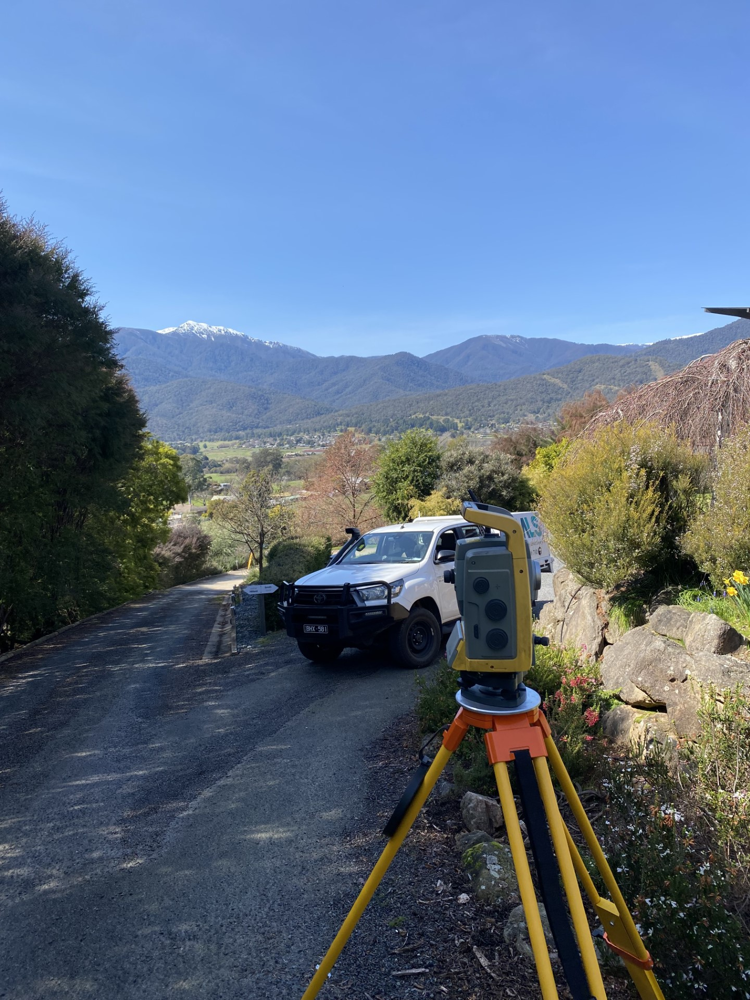
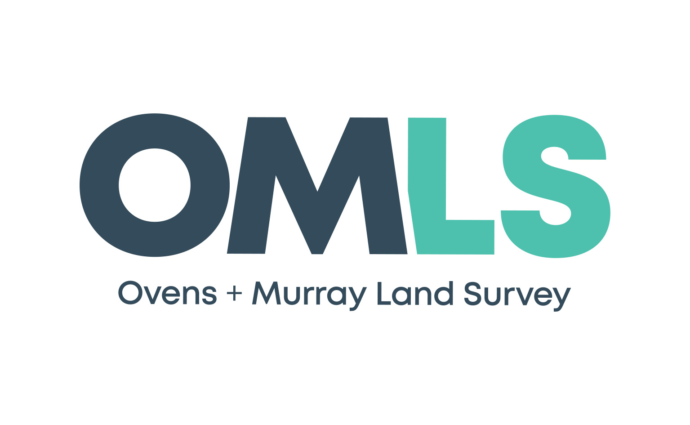

Geoportfolio
Matthew Casey
About
This website is the geoportfolio of Matthew Casey which was made for the subject Professional Practice (GEOMODO). The website entails
information that is academically and profesionally related to the field of geospatial science (surveying)
A brief introduction about myself is that I am born and raised in Yarrawonga, Australia, I am in my fourth and final year of the
Bachelor of Geospatial Science (Surveying)) (Honours) course. I am an experienced Land Surveyor with sound knowledge in a range of survey fields with expertise in AutoCAD,
Cadastral Surveying, Total Station operation, Global Positioning System (GPS) technology, and Land Surveying techniques.
I have completed and managed many successful surveying projects throughout my 5 years of experince
My own personal hobbies include playing sport, socialising with friends and travelling! More detailed information can be found in the About page!

Academic Portfolio Overview
Cartography
Cartography consists of creating maps using spatial data obtained from sources such as publicly online government data and population numbers from the Australian
Bureau of Statistics (ABS). Attatched below is the Final Cartogrpahy map assessment. The map I choose to produce is a map of Melbournes wealthier suburbs
and how the private schools in Melbounre relate to these areas
Note: If map display is too small, right-click the image and 'Open in new tab' to allow zooming of the map.
Assessment task 3: Final Map Design assessment

Cadastral Surveying Practice
In this program, you'll delve into the principles and procedures of cadastral surveying. This encompasses studying the legal frameworks governing land ownership,
conducting cadastral surveys to redefine property boundaries, and creating essential cadastral documents, plans, and reports.
Cadastral surveying holds significant relevance in the realm of land development and subdivision, constituting a pivotal domain for Consulting Surveyors.
As such, it stands as a fundamental subject for aspiring students who plan to pursue licensure as Surveyors post-graduation. Obtaining this license is a key
milestone, allowing them to proficiently conduct and validate cadastral surveys.
For the 2021 version of the course which I completed, the following assignments were completed:
- Plan of Subdivision
- Urban Cadastral Re-establishment - Abstract of Field Records, Surveyor's Report
Note: If map display is too small, right-click the image and 'Open in new tab' to allow zooming of the map.
Plan of Subdivsion

Abstract of Field Records

Industry Experience
This page will briefly cover all my work experience (as of October 2023) within the survey industry.
Ovens and Murray Land Survey

Senior Surveyor
October 2020 - September 2023
My experience at Ovens and Murray Land Surveying over the past three years has equipped me with a versatile skill set, encompassing
advanced survey computations, adept use of various surveying equipment, understanding of subdivisions, and proficiency in both LISCAD and AutoCAD.
This position presents an excellent opportunity to further my development as a surveyor, gaining valuable exposure to multiple Cadastral Surveying aspects.
My extensive involvement in cadastral surveys, from consulting to project completion, at Ovens and Murray Land Surveying, has finely honed my leadership,
teamwork, and communication skills, enabling me to thrive in high-pressure situations and successfully manage projects. I'm eager to contribute these skills
and my expertise to your cadastral surveying projects.
Skills and Proficiencies
 |
GIS |
|
Plan Drafting |
 |
Cartographic Principles |
 |
Adobe Illustrator |
 |
Remote Sensing |
 |
Photogrammetry and Drone Mapping |
 |
Web Design: HTML & CSS |
 |
Web GIS |
 |
Python Programming |
 |
SQL Database Management |
Credits and Attributions
The following programming languages and software were used to create the website
- HTML
- CSS
- JavaScript
- Visual Studio Basic
The deliverables contains content from the following subjects:
- Cartography 2 (GEOM2079)
- Applied Geospatial Techniques (GEOM2083)
Special thanks to the following people who have helped me make this website with their expertise and guidance: